Страницы авторов "Тёмного леса"
Литературный Кисловодск и окрестности
Пишите нам! temnyjles@narod.ru
Научная биография автора была опубликована в 2006г. (Игорю Ивановичу Рокитянскому - 75 лет // Геофиз. журн. - 2006. - 28, N4. - С. 146-147). Здесь она будет расширена, дополнена личностными деталями, а также неформальными соображениями и оценками автора.
| 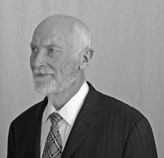 |
Моя мать - русская из Твери, отец - украинец с Сумщины, поэтому я всем нутром за сближение и объединение с Россией.
Моя родословная прослежена на 3 поколения.
Прадед по матери Яржемский Ипполит Яковлевич (1834-1876) был военным, прошедшим путь от младших чинов до полковника.
| 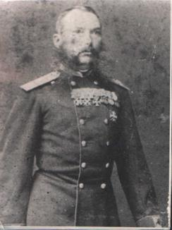 | |
| 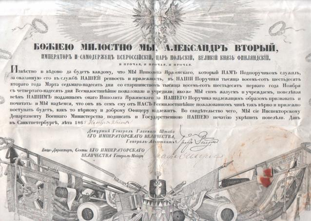 | царская грамота 1865 |
Сохранились витиеватые царские грамоты о пожаловании очередных чинов и его трогательные почтительные письма супруге Глафире Петровне, моей прабабушке. В 30 лет она стала вдовой с 4 детьми и посвятила себя их воспитанию. Мой дед, Яков Ипполитович Яржемский (1869-1941), был творчески одаренным (рисовал, пел, играл на сцене, составил пособие-словарь как писать стихи...), после революции перебивался случайными заработками в Москве, Твери, Саратове и последние 15 лет в Вышнем Волочке, где безуспешно пытался учить меня дошкольника музыке. Бабушка, Мария Александровна, пережила деда на 1 год. Мое детство прошло в Вышнем Волочке и я хорошо помню деда и бабу по матери.
Моя мать, Яржемская Елена Яковлевна (1907-1975), в 17 лет начала учительствовать в сельской школе и сохранила надолго воспоминания о страхах, которые испытывала по пути из школы при прохождении через зимний темный лес. В 1926 году поступила в Ленинградский университет на физмат. факультет и в 1930 закончила его по специальности биохимия. В 1928 г она познакомилась с моим будущим отцом и в 1929 г они поженились. Мама работала по нефтехимии, в 1949 г защитила кандидатскую диссертацию, преподавала биохимию в Педиатрическом институте, в 1960 г начала терять зрение и ушла на пенсию.
Бабушку и дедушку по отцу я никогда не видел, но их и прадедов имена мне известны. Все были казацкого сословия. Жили в небольшом хуторе Рокитяны в сельской глубинке между Конотопом и Ромнами. У деда Василия Ивановича было 9 детей, мой отец, Рокитянский Иван Васильевич (1901-1987) был шестым. Семья жила в небольшой двухкомнатной избе из самана. Зимой отапливали соломой и стеблями подсолнечника и кукурузы только одну комнату, где и жили. Занимались хлеборобством, жили бедно, хотя семья была дружная и трудолюбивая. При коллективизации хутор был разрушен, а жители переселены в село Хустянка. Во время голодомора удачно спрятали продукты и пережили . Отец учился и работал в Хустянке, Смелом, Ромнах, Харькове и выучился на агронома, но в 1926 году был направлен в Ленинградский университет, который закончил в 1930 г по специальности биохимия. В дальнейшем работал в Ленинграде над созданием синтетического каучука, защитил в 1946 кандидатскую диссертацию. Отец был убежденным атеистом, а большинство остальных членов семьи были очень набожными. Старшие братья отца Лука и Савва за активность в церковных делах были расстреляны в 1938. Ни отец, ни мать, ни я никогда членами КПСС не были. Но сейчас после 30 лет пост-советской "незалежности", возможно, и вступил бы в КПСС.
Родился в Ленинграде 10 июля 1931 г. В девять месяцев был отправлен в Вышний Волочек на Зеленую улицу к бабушке и дедушке Яржемским, с которыми прожил до 5-летнего возраста. Счастливые годы, вольница. Утром выпивал кружку какао, выпрыгивал в окно и целые дни гонял по улице с хорошими друзьями из соседних домов. Дедушка старался привить мне интерес к искусству и музыке. Неприятных событий запомнил два. В 2 года попал с взрослыми на большое водохранилище, зашел по колено, наклонился и вдохнул в себя воду. Еле откашлялся. После этого появилась водобоязнь (хотя я "Рак"), преодолеть которую и научиться плавать удалось только в 9 лет. Во дворе у нас была большая цепная собака. Я дружил с ней и сотни раз проходил около неё. Мне было года 4 или 5, когда мне купили новое пальто. Я радостно выбежал в нём во двор. Собака не узнала меня, яростно набросилась и покусала. После этого надолго сохранилась неприязнь к собакам.
С 5 до 10 лет зимой я жил с работающими родителями в Ленинграде, летом наслаждался "вольницей" в Вышнем Волочке. В Ленинграде меня водили в детский садик, о котором конкретных воспоминаний не сохранилось: что-то темное, тягостное, очень неприятное. Родители прошли со мной материал 1го класса и сразу отдали во второй класс, где я был самым младшим. Учеба во 2ом и 3ем классе не сохранилась в памяти. У родителей было много друзей и мы к ним ходили в гости, где я весело играл со сверстниками и нас вкусно угощали. Из летних событий особенно ярко помню преодоление водобоязни. Чистая речка, берег с круто уходящим на глубину дном, узкий рыбацкий мосток длиной метров 6. Плавать ещё не умею. Захожу на мосток и ныряю к берегу, следующие разы захожу всё дальше и, наконец, осваиваю ныряние с дальнего края мостка. Восторг от содеянного чувствую и сейчас.
Война застала меня в Вышнем Волочке. Мама приехала за мной и повезла в Ленинград. Железнодорожный мост близ станции Бологое немцы разбомбили, и пришлось 10 км идти пешком. В сентябре 1941 нас эвакуировали через Москву в Казань. Ехали в товарном вагоне "теплушке" около недели, два дня проезжали Москву. Немцы её усиленно бомбили, периодически сирены гудели "воздушную тревогу", мы из теплушки не выходили и наблюдали трассирующие снаряды зениток, зарева многочисленных пожаров и несколько дымных падений сбитых самолетов.
В Казани родители по 12 часов работали на военном производстве, я учился в школе и вел значительную долю домашних дел. Учился легко и кое-как. Совершал многокилометровые походы в пригороды за щавелем, грибами и ягодами, большие заплывы по озерам и Волге, был период увлечения азартными играми, картами в очко, буру, где проигрывались и выигрывались "состояния" из марок, монет и других мальчишеских ценностей.
В 1945 вернулись в Ленинград. Весной 1946 наткнулся на объявление "Открытие летнего сезона в яхт-клубе ВЦСПС. Катание гостей на яхтах". Я туда и сразу из гостя превратился в завсегдатая. Изучил узлы, правила движения и гонок, через 2 месяца получил права рулевого и стал гонщиком швертбота М-20, а на следующий год назначили капитаном килевой яхты. В яхт-клубе был не менее 6 раз в неделю, включая зиму, когда с яхт переходили на буера, а в межсезонье занимались ремонтом: суда были старые деревянные и требовали ухода. Мы чувствовали себя настоящими моряками, в душе звучала песня "Только в море, только в море, безусловно это так. Только в море, только в море может счастлив быть моряк". Пароходы мы презирали и мечтали бороздить океаны под парусом. Управление яхтой доставляло огромное удовольствие, у меня развилось чутьё ветра, я чувствовал приближение шквалов и всегда мог оптимально противостоять им. В 1947 г стал чемпионом Ленинграда среди юношей. В школе перебивался с троек на четверки. Приближался 10-ый класс, и родителей беспокоило моё будущее. Вели со мной "душеспасительные" беседы. Не помогало. Тогда моя мама пошла к директору яхт-клуба и попросила ограничить мои посещения 1 днём в неделю. Повозмущавшись, я вплотную взялся за учебу. Школа и учителя были хорошие, учился с интересом. Послали на математическую олимпиаду, и я попал в число победителей. Учителя стали тянуть меня на медаль, заставили пересдать предметы 9-го класса, которые шли в аттестат. Медаль получена. Куда поступать? Давно наметил в мореходку. Родители, все родственники и знакомые отговаривают. Поддаюсь: во первых, моряки уже почти не ходят под парусом, во-вторых, мне нравится физика, и поступаю на физический факультет. А мой лучший друг с 4 класса, весельчак Юрка Ребристый, не увлекавшийся парусом, идет в мореходку, после окончания плавает 10 лет по Баренцеву морю в ожидании загран-визы, получает её и выходит в океан. Во время Карибского кризиса уже капитан, возит вооружение на Кубу, американские самолеты непрерывно совершают облеты, чуть не задевая мачты корабля. Образ Юрки прекрасно описывают слова песни: "Весел был всегда моряк, и на суше и в морях, День и ночь, в любое время суток. Потому что был он смел и грустить он не умел И не мог ни дня прожить без шуток" В результате малоподвижного образа жизни в плаваниях Юрка сильно растолстел, проблемы с сердцем и примерно в 55 лет умирает от сердечного приступа на капитанском мостике в Индийском океане. [про Юрку будет изменено и существенно дополнено]
| 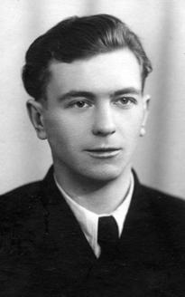 | |
| 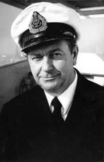 | Выпускник школы - Юрий Ребристый - капитан |
| 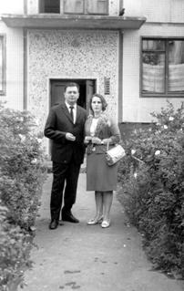 | Юрий с женой Ольгой |
Физика меня интересовала, лекторы и преподаватели были хорошие. Я аккуратно записывал лекции и по ним во время сессии тщательно готовился к экзаменам, стараясь во всех вопросах досконально разобраться. Днем занимался один, потом встречался со своим другом Андреем Жиглинским, мы взаимно консультировали друг друга по недопонятым проблемам, и на экзаменах не было вопросов, на которые мы не могли ответить. На первых двух курсах я был в группе оптики и добровольно принимал участие (без оплаты) в научных экспериментах. Мне доверили работать с дорогим (3000 руб ? 5000$) инфракрасным излучателем и, непонятно как, он у меня сгорел. Его списали, а я из научной лаборатории ушел.
Самым ярким впечатлением университетских лет была стройка колхозной ГЭС в северной глубинке, на которую желающие добровольно ездили во время летних каникул по призыву комсомола. Наша бригада прокладывала линию электропередач. Все делали сами. В лесу выбирали стройные сосны, вручную спиливали, топором обрубали ветви, перетаскивали к месту установки, вкручивали изоляторы и ставили в подготовленные ямы. Подъем столба был одной из трудных и опасных операций. Мой высокий рост имел преимущество при подъеме и я старался изо всех сил, за что ребята в шутку прозвали меня "бригадная моща", вкладывая двойной смысл (я был очень тощий). Друзья по бригаде остались на всю жизнь.
После второго курса я в поисках приключений в одиночку устроился техником в экспедицию ВСЕГЕИ. Два месяца хорошо отработал в горах Тувы, собираюсь к началу сентября на занятия. Начальство не отпускает (не хватает техников), не дает машину. Ухожу с гор пешком и на перекладных, недополучив зарплату. В университете перехожу в группу геофизики. В середине 4-го курса "вдруг" увидел веселую девушку в окружении трех весёлых сокурсников. Мы учились вместе с 1 курса, но я её не замечал и вдруг как "с первого взгляда". В начале 5 курса мы поженились и прожили 53 года, хотя, как я узнал намного позже, сочетание Рак - Козерог самое неблагоприятное. И действительно, трудности взаимоотношений бывали, но положительные в целом эмоции преобладали.
Дипломная работа была экспериментальной с изготовлением аппаратуры.
Пять человек из нашего выпуска были распределены в Институт Физики Земли (ИФЗ) АН СССР в аспирантуру. Моим руководителем был назначен выдающийся математик (теория регуляризации...) и геофизик (магнитотеллурическое зондирование (МТЗ)...) академик Андрей Николаевич Тихонов. Но я хотел вести экспериментальную работу и перешел к другому руководителю, который фактически не руководил мною. Полтора года ушло на экзамены и выбор темы, затем сделал измерительную аппаратуру, договорился работать в лаборатории химфака МГУ, где готовил химически чистые, специально обработанные образцы песка. Полгода вел измерения и вдруг обнаружил, что моя аппаратура пишет собственные процессы, а не вызванную поляризацию. За месяц разобрался с аппаратурой, затем за три месяца заново провел все измерения и в последующие три месяца написал диссертацию за два месяца до окончания срока аспирантуры 31 октября 1956. И тут выходит постановление - до защиты нужно опубликовать основные результаты. За 2 недели готовлю большую статью и Известия АН СССР, серия геофизическая публикуют её через 4 месяца (обычно 1,5 года). 17 мая 1957 защитил кандидатскую на тему "Вызванная поляризация ионопроводящих пород". В ИФЗ эта тема не вписывалась, продолжать её официально я не мог и, вообще, устроиться в Москве не стремился.
В 1957 начинался Международный Геофизический Год (МГГ). Послевоенный Мир активно развивал исследования планеты. Нужны были кадры. Валерия Алексеевна Троицкая предложила мне на выбор три места для организации наблюдений земных токов: Камчатка, Бакуриани и Алушта. Тянуло на Камчатку, но у жены был туберкулез и выбрали Алушту. Регистрацию земных токов и магнитного поля освоили легко и оставалось много времени. Хотел продолжать исследования и по вызванной поляризации. Денег на науку тогда не жалели. Я самостийно за экспедиционные средства почти построил небольшой спецпавильон с вытяжным шкафом, но тут на Черное море приехал грозный главбух ИФЗ и обнаружил у меня нецелевое расходование средств. Я искренне возмущался, что мне не дают продолжать эту интереснейшую тему - вызванную поляризацию. Видя мою наивность, меня сильно не наказывали: просто сняли с должности начальника отряда, отряд упразднили и нашу электромагнитную (EM) группу подчинили начальнику сейсмостанции. Моя следующая инициатива - изучение морских токов. Для этого требовались кабель, буи, гальванометры, аренда катера, но это вписывалось в тематику и было выполнено. Результаты измерений вылились позднее в пионерскую работу о береговом эффекте (1963). Кроме морских работ летом много ходил по горам и плавал в море, занимался подводной охотой с самодельными маской и копьём, без добычи не возвращался. Зимой я оставался наедине с записями земных электрических токов и магнитного поля, анализировал их и эмпирически вывел закономерности магнитотеллурики. Так я вошел в магнитотеллурику "снизу", от наблюдательного материала. Через год я ознакомился с теоретическими работами Тихонова, Четаева, Бердичевского и написал статью "О применении магнитотеллурического метода на анизотропном и неоднородном массивах" (1961). Работа не учитывала фазовых соотношений, но по анализу и учету неоднородностей была пионерской, её перевели на английский и включили в сборник под редакцией проф. Возоффа. Я много размышлял над иронией судьбы: если бы я остался в аспирантуре у Тихонова и выбрал тему МТЗ, я мог бы стать ведущим теоретиком метода (а так я "потерял" 4 года на вызванную поляризацию). Так я думал, а сейчас сомневаюсь. Наверное, теория формул - это не моё. Я выводил и приводил формулы в статьях и монографиях, но делал это медленно и с трудом. Я знаю многих, кто владеет формулами с легкостью, выводя их прямо на доске перед аудиторией слушателей. Особенно великолепны в этом Владимир Николаевич Страхов и покойный Анатолий Аркадьевич Гроза. Я же могу работать с формулами только в уединённой тишине. Анализируя же экспериментальные данные, я чувствую сложность природного явления и мысль направлена на поиск основных закономерностей, формирующих наблюдаемое явление, на поиск их физической сущности.
Один пример. Теоретики МТЗ поручали своим сотрудникам выполнять глубинные МТЗ в разных местах Земли и появились публикации: в одном месте глубина до проводящего основания мантии Земли 80 км, в другом - 400 км, в третьем - 1000 км, подобные результаты стали получаться и в близко расположенных пунктах. После "перелопачивания" своих крымских наблюдений, я наверное смог бы объяснить эти результаты в 1960, но они появились позднее. Обстоятельное физическое объяснение результатов глубинного МТЗ и набор способов как их исправить были доложены мною в 1969, опубликованы в 1970-1971 и сейчас мало что можно добавить к этим работам. Тогда их приняли в штыки, в 1975 появилась независимо подобная работа на западе и в 1976 повторена (бывшими критиками, причем без ссылки) в СССР.
В Крыму я еще не понимал значение этих работ, научного общения никакого, библиотека скудная (ежегодные 2-3 короткие командировки в Москву не спасали положения). Чувствовал, что "варюсь в собственном соку", появились сомнения в своей научной дееспособности. И хотя жизнь в Крыму была прекрасна: море, горы, свой дом с садом, я прошу перевести меня на Центральную обсерваторию "Борок", где велась интенсивная научная работа по анализу уникальных новых данных, полученных во время МГГ и Года спокойного Солнца и в последующие годы на обсерваториях СССР и зарубежья.
Борок Ярославской, 300 км от Москвы. Руководила работами Валерия Алексеевна Троицкая. Она родилась 15 ноября 1917, в детстве её обучили французскому и немецкому языкам и музыке, хотела стать музыкантом, но отец посоветовал физику в университете. После войны кончила университет, вышла замуж, у неё родились двойняшки Петя и Катя, и ей пришлось три года просидеть с ними дома. За это время она самостоятельно отшлифовала английский, французский и немецкий языки так, что свободно говорила на них. В 1950 поступила в аспирантуру к Тихонову и защитила диссертацию на тему Короткопериодные колебания (КПК) естественного электромагнитного поля по записям земных токов. Когда начался МГГ, ей поручили анализ и интерпретацию записей всех обсерваторий. Работа очень трудоемкая - проанализировать вручную многие километры сложных осциллограмм. В Москве это было организовать невозможно. И она организовала в Борке. Набрала 5-7 молодых м.н.с, москвичей и ленинградцев, более 10 техников из местных девчат и сама проводила в Борке более трети времени. Её приезд был праздником, она всех заражала научным энтузиазмом, скучные осциллограммы "оживали". Она сделала 2 официально зарегистрированных открытия - открыла неизвестные ранее колебания: "жемчужины" и КУПы (колебания убывающего периода, возникающие при сжатии магнитосферы солнечным ветром), опередив зарубежных ученых. Троицкая была типичным гуманитарием, но достойно носила звание докт.ф.-м.н. Не вступала в партию, но стала самым выездным ученым благодаря знанию языков и умению достойно представлять советскую науку. Она была первой женщиной в мире опустившейся в батискафе на глубину 3 км в обществе 2 французов, в 1970ые она 4 года успешно возглавляла МАГА (Международную ассоциацию геомагнетизма и аэрономии). В интернете на сайте "сизиф В.А. Троицкая" или просто, набрав её фамилию, можно прочитать интереснейшие сведения о жизни Валерии Алексеевны и о её вкладе в развитие космофизики.
Итак, в 1960 я с женой Делли и пятилетним сыном переехали в Борок (получили квартиру, быт был налажен) и влились в научный коллектив. Делли в компании с Троицкой и др. получила два раза великолепные грамоты ИФЗ и премии за лучшие исследования. Троицкая высоко ценила Делли за добросовестную работу и душевную чистоту. Я подобных грамот не получил, хотя участвовал в ?5 коллективных работах и столько же единоличных работ по тематике КПК. Но главным научным интересом у меня было МТЗ и береговой эффект, по ним я опубликовал за 5 лет в Борке тоже ?5 работ. Участвовал в экспедициях, в частности по регистрации ядерных взрывов. На Камчатке записал EM отклик на американское испытание на одном из Тихоокеанских атоллов. Под Семипалатинском поставил аппаратуру в 7 км от подземного ядерного взрыва. При толчке земля резко ушла из-под ног и мгновенно вернулась, приборы записали механику, а не EM. И самая интересная поездка -
Куба. Необходимо организовать геофизические наблюдения на Кубе под носом у США. Посылают сейсмолога, магнитолога и специалиста по земным токам. Последним оказался я. Троицкая сделала этот выбор за 4 месяца до выезда. За это время я с нуля начал учить испанский язык и продолжал учить на Кубе уже практически. Задача командировки была ответственная: найти подходящее место, удобное для обслуживания и свободное от помех, сделать пробные записи на обсерваторской аппаратуре, установить обсерваторию и обучить работе на аппаратуре и обработке полученных записей кубинцев, не имеющих должного образования. В поисках места объездил пол-Кубы, включая Гавану, Сант-Яго и в прошлом пиратский остров Пинос. В городах и пригородах - помехи. На Пиносе чистейшее EM поле, но на берегу ряды колючей проволоки против ожидавшегося американского вторжения, нет электричества и воды, отели загажены. По бытовым условиям сочли установку не возможной. Искали даже с вертолёта. Сейсмики и магнитчики нашли места в окрестностях Гаваны, но электрические помехи там были сильны. В конце концов нашли место в знаменитом орхидеарии в 150 км от Гаваны, оборудовали обсерваторию и начали регистрацию. Самым трудным оказалось обучение. Молодежь военизирована, сегодня со мной, завтра на другом задании. Нас командировали на 4 месяца, кубинцы просили советские органы продлить нам командировки, мне на месяц (дольше я не соглашался, так как жена ждала второго ребенка), сейсмологу на 6 месяцев. Работаем. Через 25 дней возвращаюсь в Союз и оказываюсь злостным нарушителем дисциплины - не возвратился в срок. Становлюсь "невыездным", хотя планировалось, что я буду курировать Кубу и в последующие годы. А сейсмолог через 1,5 месяца получил продление и вернулся незапятнанным. Апеллировать в "соответствующие" органы мне было бесполезно.
Поездка на Кубу была изумительна. Праздник 3-ей годовщины Кубинской революции. Рядами по 100 человек, взявшись за руки, вливаемся на площадь Хосе Марти. Собирается около миллиона. Все полны революционного энтузиазма. Фидель Кастро 4 часа произносит пламенную речь. Советская делегация под трибуной, в 5 метрах от Фиделя. К нам спускается всеобщий любимец министр промышленности Эрнесто Че Гевара, излучая доброту и мужественность. Меня представляют, короткая беседа на испанском, рукопожатие. Помню как сейчас. Потом 3 недели великолепного кубинского карнавала. И каждые выходные плавание в море по 3-4 часа в маске и ластах пока не замерзну в воде 27-28 градусов. Чтобы не обгорела спина, плаваю в футболке, на поясе мешок или сетка для раковин, кораллов, лангустов и нож для бодрости. Полно ядовитых мурен и зубастых барракуд. Последние до 1,5 метров в длину иногда стаей кружат вокруг меня, тогда достаю из ножен нож и направляю на ближайших рыб - это придает бодрости. В бесполезности ножа я убедился при встрече с большой акулой. Я плыл в полукилометре от берега над коралловым рифом глубиной метра 3 недалеко от его края, за которым темно-синяя глубина превышала 25 метров. Вдруг передо мной метрах в 3-4 появилась огромная акулья морда диаметром 60-70 см. Длину я не видел. Секунды 2 мы смотрели друг на друга. Я не успел ни испугаться, ни потянуться за ножом, как она молниеносно развернулась, так быстро, что я не разглядел её длины, и исчезла в глубине. Меня больше всего поразила её быстрота. Я бы и пальцем не успел пошевельнуть, вздумай она напасть. Возможно, её испугала моя желтая рубашка с нарисованной на груди страшной мордой. Когда мы были в Сант-Яго и на Пиносе, президент Кубинской Академии команданте Антонио Нуньес Хименес запретил мне плавать без сопровождения вооруженных кубинских подводников. Там было много акул. В других местах я плавал в одиночку (не было компаньона), но воздерживался от подводной охоты, чтобы кровь не привлекала акул. А крепчайший кубинский кофе, который кубинцы пьют каждый час, и я приучился. Фрукты и изумительно приготовленные соки и коктейли, огромные бифштексы из ароматнейшего мяса морских черепах. Но главное впечатление произвели кубинцы и особенно их неподдельный революционный энтузиазм. Тогда он еще раз убедил меня в правильности социалистического выбора. Через 30 лет я пролётом побывал в аэропорту Гаваны: ни прежнего кофе, ни прежнего энтузиазма не увидел. И последнее о Кубе. В Академии проходила научная сессия в честь советской делегации во главе с академиком Александровым. Все выступали с переводчиками и только я произнес свою речь по-испански, без бумажки и почти экспромтом, чем сорвал восторженные аплодисменты кубинцев. Я был этим весьма горд, особенно потому, что языки мне даются с трудом. Вернувшись с Кубы, я безбожно путал испанский с английским, не мог толком говорить по-английски, пока достаточно не забыл испанский. Жаль, испанский язык очень красивый.
Прогноз Землетрясений. В ИФЗ после смерти Гамбурцева директором назначили академика Михаила Александровича Садовского, специалиста по физике взрыва. Раньше в ИФЗ каждый ученый сам выбирал тематику своих исследований. Садовский потребовал от всех отделов активно участвовать в работах по прогнозу землетрясений (ЗТ). Коснулось это и Отдела Троицкой. Но Троицкая увлеченно занималась исследованием пульсаций, причем к обсерваторским данным добавился быстро растущий вал спутниковой информации, сулящий новые открытия. Все были заняты. А Рокитянский занимался пульсациями между прочим, больше внимания уделяя какому-то МТЗ. И Троицкая решила поручить EM прогноз землетрясений (ЗТ) мне. ИФЗ имел и развертывал новые сейсмопрогностические полигоны во всех республиках Средней Азии, на Кавказе, Камчатке, Байкальском регионе. Материала и возможностей было много. Я попросил Троицкую послать меня ознакомиться с работами в среднеазиатском регионе. Два месяца ознакамливался и участвовал в полевых работах Барсукова Олега Михайловича, набегался по великолепным горам, но пришел к выводу, что я не хочу этим заниматься. Главная причина - необходимость ждать неизвестно сколько сильные ЗТ и зыбкость проблемы выделения предвестников, а по МТЗ я имел задел и интересные идеи. Я сказал Троицкой, что не хочу заниматься прогнозом. Был 1965. А в 1998 я добровольно занялся прогнозной тематикой. Опять возникает предположение, что зря я в 1965 отказался - был бы сейчас крупным специалистом по прогнозной тематике. Но нет, не зря.
После Второй мировой войны ученые сейсмоопасных стран, опираясь на последние достижения технического прогресса и имея весьма солидное финансирование, надеялись за 2-3 десятилетия решить проблему прогноза. В 1950-1970-ые к прогнозной тематике приобщились сотни наиболее одарённых молодых геофизиков. Шли годы и десятилетия обширных наблюдений и упорных исследований, а прогноз не удавался. Природа явления ЗТ оказалась значительно сложнее, чем ожидалось. Представляете, талантливый молодой человек пришел в науку с целью решить интереснейшую научную проблему с важнейшим гуманитарным выходом, проработал 30-40 лет, а поставленную задачу не решил. Жизненная трагедия! И чтобы оправдать себя, научное сообщество обосновало идею о том, что прогноз ЗТ вообще невозможен (детерминированный хаос...). В последние 15 лет заниматься прогнозной тематикой стало признаком не научности, несерьёзности. Конечно это временный перегиб, "качание маятника" научной парадигмы. В 1998 я в EOSе прочел дискуссию, в которой в этически неприемлемых терминах ругали работы одного из немногих оптимистов прогноза проф. Варотсоса. Мне захотелось поддержать его. Списались, завязалось сотрудничество. Я переинтерпретировал данные МТЗ-МВП, полученный результат поддерживал трактовку сейсмоэлектрических сигналов (SES), как природного явления и предложил три возможные объяснения странных свойств SES. Всё это поддерживает идею о возможности прогноза ЗТ.
Вернёмся в 1965. Троицкая не могла согласиться с моим отказом. Помню, она привлекла к "обработке" меня Леонида Львовича Ваньяна (его Одиссея: пионер освоения Академгородка в Новосибирске, Южносахалинск, ИФЗ в 1965, Институт космических исследований и последний приют - Институт океанологии). Они приперли меня к стенке в коридоре ИФЗ и долго аргументировано доказывали необходимость и полезность моей работы по прогнозу. Я тупо молчал, отводя взгляд вниз. Я уважал обоих, но соглашаться не хотел. Наверное, пришлось бы согласиться, если бы не случай. Я же жил в Борке, а в Москве, в ИФЗ был в командировке и жил в академической гостинице в одном номере с Тарасом Сергеевичем Лебедевым - ученым секретарем Института геофизики (ИГФ) в Киеве. Разговорились, и он мне предложил перейти в ИГФ и возглавить группу МТЗ, обещая приобретение необходимой аппаратуры и укомплектование кадрами.
После выполнения всех формальностей в августе 1965 приступил к работе в Киеве, снимал одноместный номер без удобств в гостинице Украина и это было тогда не очень накладно. К ноябрю получил 2-комнатную квартиру на 1 этаже (3-комнатную надо было ждать еще полгода) и перевез семью. Для жены и младшего сына это оказалось большой потерей. Вместо прекрасно налаженного быта в маленьком академгородке среди среднерусской природы и работе в дружном молодом коллективе с великолепным руководителем, в Киеве Делли работала в редколлегии, референтом ученого секретаря, в отделе "железной леди", которая не терпела бюллетеней по уходу за больным ребенком и попрекала ими. Потом я взял её в свою лабораторию, но взаимоотношения с коллективом у неё не сложились.
В ИГФ меня приняли на должность ст.н.с. и организовали для меня неструктурную лабораторию электромагнитных исследований (ЛЭМИ) в составе комплексной геофизической обсерватории (КГО), руководимой проф. Головциным. Он был электроразведчиком старой закалки. Метод МТЗ не знал, как и магнито-ионосферной и космической тематики, бывшей в его подчинении (я же, работая у Троицкой, знал их современное состояние). Первые месяцы взаимоотношения были отличными, а потом испортились. Виноват был, конечно, я, ибо Головцин был добрейшим человеком. Деталей не помню. Наверное, резко выступал на семинарах со своим мнением, обращался в дирекцию через голову.
Дирекция - Серафим Иванович Субботин, Всеволод Борисович Соллогуб и др. для замыкания комплекса глубинных методов исследования коры и мантии нуждались в методе МТЗ. Мне были предоставлены все возможности: кадры, вплоть до приглашения иногородних с предоставлением квартиры, любая аппаратура, выпускаемая в СССР, деньги и транспорт для длительных экспедиционных работ. Аппаратурой и экспедициями я воспользовался оптимально, а вот с кадрами допускал серьёзные просчеты. Я для себя считал главным научную работу, сам процесс познания объективной реальности (не степени и звания и тем более должности привлекали меня), наивно думал, что и для других то же самое. Вообще на личностные отношения обращал недостаточно внимания, не понимал, что они могут как серьезно помогать, так и мешать в работе. Итак, о кадрах. Со мной сразу стал работать Сережа Кулик, и вскоре перешел Игорь Логвинов с двумя великолепными инженерами полевиками Женей Тонковидом и Володей Туржанским. Они ранее были в группе по изучению карста Бориса Михайловича Смольникова, участника войны, парашютиста, отличного человека (безвременно зарезанного медиками). Карст практически очень важная проблема, но ИГФ был нацелен на глубинные исследования. Не преминул я воспользоваться и возможностью пригласить специалистов со стороны. Но выполнил это бездарно. Для морских работ пригласил ст.н.с. Назаренко из Геленджика. Он три месяца поработал, увидел, что своего судна у Института нет, и ушел в Рижский институт морской геофизики. По совету Ваньяна пригласил Геннадия Николаевича Ткачева из Иркутска. Он прибыл на 10-12 месяцев позднее меня, к тому времени, когда я сумел испортить отношения с Головциным и вскоре Ткачева назначили руководителем моей ЛЭМИ, а я оказался в его подчинении. Я не очень переживал, полагая, что будет больше времени для научной работы. Так и было. Большинство сотрудников лаборатории продолжали работать со мной. Ткачев в интерпретации кривых МТЗ использовал не обоснованный теоретически метод, в котором каждому перегибу кривой соответствовал слой геоэлектрического разреза. Я критиковал его и возник между нами вяло текущий конфликт длительностью более 10 лет. Сотрудники поддерживали меня. Дирекция увидела неуравновешенный характер Ткачева (позднее он был признан душевно больным), переподчинила ЛЭМИ из КГО в другой отдел и руководителем снова поставили меня. Могу отметить, что и я и Ткачев конфликтовали сдержанно, не нарушая этических норм. Перейду к науке.
В середине 1960ых появился метод магнитовариационного зондирования (МВЗ) по данным одной обсерватории, по нему в ИЗМИРАНе были защищены две кандидатские диссертации, и я в дополнение к МТЗ сделал ставку на этот метод. Закупили 6 магнитовариационных станций и начали полевые измерения. Результаты МВЗ хаотически изменялись от точки к точке и иногда даже от вариации к вариации. Анализирую пространственно-временное поведение вариаций и убеждаюсь, что использованная в МВЗ модель очень идеализирована. Реальные вариации сильно от неё отличаются и эти отличия "генерируют" глубины до проводящего основания мантии Земли от нуля до бесконечности. Анализирую теорию МВЗ, структуру используемых вариаций, выполняю математическое моделирование МВЗ с реальными вариациями, полученными как по результатам сферического гармонического анализа мировых данных, так и по нашим полевым измерениям. Убеждаюсь, что методика МВЗ в одной точке и в малой по сравнению с размером источника поля области не корректна. Публикую этот результат в работе "О возможностях метода магнитовариационного зондирования", что вызывает раздражение московских корифеев. Использую корректные разновидности МВЗ по глобальным данным и в регионах экваториального и полярного электроджетов, получаю распределение электропроводности верхней мантии с оценкой погрешности и даю ему геотермическую интерпретацию. Академик Тихонов представляет мою рукопись в Доклады АН СССР.
Анализируя полевые наблюдения, обнаруживаем аномальное поведение геомагнитных вариаций. Восточная компонента на расстоянии 70 км почти удваивается, а вертикальная меняет знак. И это на Украинском щите! Докладываю на семинаре в ИФЗ. О.М.Барсуков выступает "такого на щите не может быть, ошибка измерений", отвечаю "если бы 5 раз не перепроверил, не докладывал бы", работу публикуют. Аномалии геомагнитных вариаций ранее были обнаружены магнитологами в Японии и в Германии, для их интерпретации использовались слишком идеализированные модели: идеальный изолятор для вмещающей среды и/или идеальный проводник для аномалии электропроводности. Я назвал этот новый метод магнитовариационным профилированием (МВП) и сконцентрировал силы лаборатории на его развитии. Игорь Логвинов (ИЛ) организовывал полевые работы, участвовал в обработке и геологической интерпретации, Сереже Кулику (СК) было поручено физическое моделирование, пришедшему в 1969 аспиранту Володе Шуману - развитие теории. Для создания теории МВП использовали наработки рудной электроразведки (Светов и др.), расчеты двумерных моделей А.А.Кауфмана и В.И.Дмитриева. Принципиально новым было взаимопроникающее комплексирование методов МВП, МВЗ и МТЗ, основные идеи которого были мною опубликованы на 5 страницах в работе "Исследование глубинной электропроводности" (1970). В последующие годы эти идеи не изменялись, а только обрастали новыми результатами теории, расчетов, моделирования, данными полевых работ и геолого-геофизических обобщений.
В 1972 вышла моя первая монография "Геофизические методы магнитовариационного зондирования и профилирования". В ней были собраны материалы более 10 моих статей, половина которых была в соавторстве с сотрудниками лаборатории, в первую очередь с ИЛ. Я должен был сослаться на все эти статьи. Я же по недомыслию, а также из ложной скромности не перегружать список длинным перечнем своих работ, на значительную часть статей не сослался, поскольку все статьи сочинял сам. В итоге я непроизвольно поставил себе и ИЛ капкан. ИЛ хорошо работал, и я тянул его защищать диссертацию по нашим общим работам. К 1972 он представил диссертацию, При её апробации нашли, что в ней много тождественных мест с моей монографией и сделали вывод, что кто-то из нас допустил плагиат. Конечно, я как руководитель был виноват. Пытался объяснить ситуацию и выправить свое недомыслие, но уровень окружающего недоброжелательства был весьма высок, да и ИЛ обиделся и уже не хотел защищать под моим руководством.
В 1973 я собрал свои работы по комплексу МВЗ-МВП-МТЗ и послал на апробацию московским корифеям МТЗ в качестве докторской. Ответ был такой: зондированиями занимаемся мы и наши ученики, вы занимайтесь МВП, тогда мы диссертацию поддержим. Через год представил и в ноябре 1974 защитил в Ленинградском университете диссертацию "Исследование аномалий электропроводности методом магнитовариационного профилирования". В основу был положен метод МВП, но МВЗ и МТЗ также были хорошо представлены. Самым компетентным оппонентом был Александр Аркадьевич Кауфман. И вдруг за 1,5 месяца до защиты он начинает отказываться от оппонирования, причину не объясняет "не могу и всё". Уговариваю, соглашается. Защита единогласная. Через 2 месяца Кауфман навсегда уезжает в Израиль, Германию, США, это известно в ВАКе. Черный оппонент Юрий Дмитриевич Калинин (его методики МВЗ в точке я раскритиковал 5 лет назад) дает хороший отзыв, ВАК посылает второму оппоненту (таковое не практиковалось) с рекомендацией быть построже. Вторым черным оппонентом была Троицкая. Она тоже дала хороший отзыв и все это мне рассказала. В ВАКе думали еще полгода и через 2 года после защиты утвердили.
Заграница. В 1973 в составе группы научного туризма участвовал в работе Ассамблеи Международной ассоциации геомагнетизма и аэрономии (МАГА) в Киото. По итогам моего сообщения меня пригласили сделать заказной обзорный доклад на 2ой EM Школе в Оттаве в августе 1974, где я оказался единственным представителем от СССР. На Школе было много интересного. Через месяц проходила отечественная Школа под Ашхабадом и я предложил рассказать о международной Школе. Руководители нашей Школы не поддержали, они переживали, что не они первые. В Оттаве я близко познакомился с замечательным учёным и человеком Яном Гафом (в марте 2011 его не стало). Он проводил площадные МВП, регистрируя вариации в 40 пунктах на 40 синхронно пишущих магнитометрах собственной конструкции. Обработка была очень трудоемкой, а интерпретация только качественной. Прослушав мой доклад, он пригласил меня через год приехать к нему в Эдмонгтон на 10 месяцев и совместно обработать и переинтерпретировать по моей количественной методике его площадные съемки в Канаде, США и Южной Африке. Поработать с таким материалом было моей мечтой, ведь у нас было всего 6 станций для синхронных записей. Все формальности были заблаговременно сделаны, в ноябре 1975 планировался мой отъезд. За пару недель до срока директора Института Серафима Ивановича Субботина пригласили в 1 отдел Академии и объявили, что мой визит аннулируется и что в Канаду уже сообщили причину - у меня заболевание позвоночника. Истинная причина осталась нам не известной, но я стал на 14 лет "невыездным" в капиталистические страны. В следующем году в Венгрии была 3 международная EM Школа, на которую из СССР приехало более 20 человек. Моими работами заинтересовался известный немецкий магнитолог Проф. Фанзелау. Он предложил переиздать мою вторую монографию "Исследование аномалий электропроводности методом магнитовариационного профилирования" (1975) на английском языке и порекомендовал фирме Шпрингер опубликовать её.
Монография: Rokityansky I.I. Geoelectromagnetic investigation of the Earth's crust and upper mantle. Berlin-Heidelberg-New York: Springer Verlag. - 1982. - 381p.
Фирма обратилась во Всесоюзное Агентство Авторских Прав (ВААП) и договор об издании был заключен. В договоре была дата представления готовой переведенной на английский язык рукописи. Я запросил 14 месяцев, чтобы привести монографию 1975 года к уровню 1980. Начав модернизацию, я увлекся и написал новую монографию на 296 стр. "Индукционные зондирования Земли" (1981), составившую 5 глав Шпрингеровской монографии. Модернизировать и переводить монографию по МВП, о которой шла речь в Договоре, уже не было времени. В результате материал по МВП был вдвое сокращен и занял всего 2 главы. Ни до, ни после я так интенсивно не работал, просиживая в институте по 12-13 часов. Выхожу вечером и в глазах мерцающие круги. Переводили 4 переводчика, специальная терминология и окончательная редакция были на мне. Печатали в Японии на прекрасной бумаге и в великолепном переплёте тиражом 1000 экземпляров. Лет за 5 тираж был распродан. Прошло 29 лет, но монография "Геоэлектромагнитное исследование земной коры и мантии" не устарела. Появились монографии Кауфмана и Келлера, Бердичевского и Дмитриева, Жданова, Светова, Файнберга, Симпсон и Бара. В некоторых из них более обстоятельно и глубоко описана математическая теория, в других освещен отдельный метод. Комплексный взаимоувязанный анализ всех трёх основных методов глубинной геоэлектрики с упором на физическую сущность методов пока дан только в моей монографии. Это мне признал несколько лет назад мой неоднократный оппонент (не по защите диссертаций, а по восприятию и толкованию новых идей) Марк Наумович Бердичевский.
1980-ые. После опубликования "Геоэлектромагнитных исследований..." в моем научном творчестве наступил вяло прогрессирующий застой. Я работал, получал новые результаты, но "без огонька". В 1982-1984 три раза ездил на Камчатку по приглашению Института вулканологии АН СССР. Просматривая результаты аномального поведения модуля геомагнитного поля "увидел" Авачинскую аномалию электропроводности, для количественной интерпретации разработал методику интерпретации МВП по модульным данным. В следующем году вместе с Евгением Михайловичем Тонковидом привезли на Камчатку трехкомпонентные магнитовариационные станции (МВС) и прошли два профиля вкрест Авачинской аномалии электропроводности. Интерпретация показала, что эта аномалия электрически соединяет воды Тихого океана с магматическими очагами Авачинской группы вулканов. Полевые работы проходили на местности с большим количеством быстрых речушек, в которых нерестилась красная рыба. Ловить её очень легко, а свежая икра хороша даже без соли. Ловили не только мы. Кругом было полно свежих медвежьих следов и куч. К счастью, с медведями встреч не было, но один медведь умудрился проломить настил из тонких жердей, перекрывавших землянку, в которой работала магнитовариационная станция, упал на станцию и испортил недельную запись.
Три года сотрудничал с электроразведчиками Ухты. И тут поработали наши МВС. В 1983-1984 г был пройден 1000-километровый профиль Полярный Урал - Тиман. Первые три пункта пересекали Уральские горы, под которыми мы ожидали обнаружить аномалию электропроводности. Если перед перестановкой станции сделать обработку полученных данных, то можно скорректировать местоположение последующих пунктов, чтобы лучше изучить аномалию. Станции "забрасывались" в тундру на вертолете. "Забрасывать" меня для обработки возможности не было. Тогда я решил пройти от пункта 1 (в Азии, недалеко от Салехарда) до пункта 2 (близ водораздела Уральских гор) и далее до пункта 3. Между пунктами было примерно 30 км напрямик и около 40 км по тропам. Шел по карте, один, без радио и оружия, в накомарнике. Погода была жаркая, но раздеться было нельзя - комары и мошки свирепствовали. Переходил небольшие речки и если раздевался, то проведешь рукой по телу и на теле жирная масса раздавленных комаров. В палатках при станциях были антимоскитные сетки, "ночью" было светло, но не жарко - тогда и обрабатывал магнитограммы. С пункта 3 меня должен был забрать вертолёт, поскольку следующий пункт был в 60 км за непроходимыми болотами. Но тут испортилась погода: с Баренцева моря пришел холодный дождливый циклон, погода нелетная. На станции 2 человека, один недавно освобожденный уголовник. Хлеб кончился, консервы на исходе, одни макароны. А тут ещё я - лишний рот. Через день один из них пошел на охоту. К вечеру вернулся с 25 кг оленьего мяса. Большая часть убитого оленя осталась лежать где-то в 5 км от станции. Немедленно все трое вышли за остальным мясом, ибо местное зверьё могло его найти и съесть. В сумерках охотник часа 3 не мог найти место, под утро нашел. Мы вырезали все лучшие части и принесли на станцию. Проблема питания была успешно решена. Потянулись дни ожидания вертолета. На улице 7 градусов, сильный ветер с дождем. В палатке есть печка, но дров в окружающей тундре мало и сырые. Пол досчатый. Мне дали ватный спальный мешок и место на досках. И я от души оценил, какой прекрасный материал это дерево. На нем тепло (на раскладушке снизу идет холодина), оно прекрасно пахнет и возникает ощущение, что оно живое. Спали часов по 15. Вертолет прилетел на 10-ый день. Под Полярным Уралом аномалии электропроводности не оказалось. Зато на Тиманском кряже обнаружили аномалию с необычайными свойствами - в одном из пунктов восточная горизонтальная компонента геомагнитных вариаций изменяла знак по сравнению с остальными пунктами. Всего в зоне аномалии оказалось 8 пунктов с весьма сложным поведением. Анализируя аномальные поля всех трех компонент, удалось построить извилистую модель, описывающую наблюдаемые поля. Затем эта модель была исследована на установке физического моделирования во Львове и только после этого статья "Тиман -Полярный Урал" была послана в журнал.
В 1985 г Абдулхай Азымович Жамалетдинов (Апатиты) организовал эксперимент "Волгоград - Донбасс", во время которого импульсы тока 700 А пропускались в Землю через линию длиной 473 км. Десятки организаций принимали участие в регистрации импульсов становления и МТЗ, мы выставили МВС для метода МВП и обнаружили одну из крупнейших аномалий электропроводности - Донбасскую. Уже зная о её существовании, мы с трудом обнаруживали её проявления в данных МТЗ и становления, без МВП она осталась бы незамеченной.
Примерно в 1980г в институт пришло приглашение Мингео принять участие в полевом практическом семинаре по биолокации разломных зон и рудных тел на Украинском щите. Роман Иванович Кутас и я вызвались поехать. В результате недельной практики я убедился, что метод работает даже в моих руках. Постепенно это забывалось. И вдруг случайная встреча со старым знакомым по ИФЗ, проф. Дубровым и он приглашает меня на Всесоюзную конференцию по биолокации в Москву, осень 1989. Приезжаю и окунаюсь в совершенно другое околонаучное сообщество, разношерстное: от нормальных ученых уфологов до контактеров, не признающих ничего, кроме информации, сообщаемой лично только им из космоса. Руководит патриарх биолокации известный геолог Сочеванов. Я воспринимаю биолокацию как безусловно реальный практический метод, который может быть объяснен физически и ставлю перед собой задачу сделать это. Составляю планы и проекты, какие наблюдения надо поставить, чтобы прояснить физику биолокации. Идет 1990 г - год защиты отчетов за 5 лет и выдвижения новых тем на следующие 5 лет. И вот я со свойственной мне наивностью предлагаю новую тему по обстоятельному изучению природы биолокации. Сейчас я понимаю, что эта тема плохо вписывается в существующую парадигму и навряд ли могла быть принята даже при самом хорошем отношении ко мне. Мои же отношения с дирекцией были весьма натянутыми (подробнее ниже), тему не приняли и я впервые за 25 лет остался без темы. В 1991 мне стукнуло 60 лет, со мной заключили контракт ещё на год. Денег на экспедицию не было, интерес к геоэлектрике поостыл, хотя был ряд интересных аномалий, которые хотелось бы изучить дополнительно, но это требовало новых наблюдений, средств. А тут начинался пост-перестроечный развал. Я же погружался в "изучение" биолокации и прилегающих околонаучных дисциплин, посещал конференции, убедился в существовании паранормальных явлений, дистанционной биолокации, дистанционной диагностики (например, по фотокарточке) и лечении, в управлении погодой силой мысли. (Последнему я дал физическое объяснение, опубликовал его в газетах и журнале "Аномалия", опубликовать в научном журнале долго не удавалось, но в 2014 удалось). И, главное, я недавний атеист убедился в существовании тонких сущностей и подошел к признанию Бога.
В 1991 г. встретил в Киеве английских даузеров (биолокаторщиков) и они меня пригласили в Англию. Возили по английской глубинке, огромным соборам, к Стоун-Хейдж, по энергоизлучающим разломам. Я, к сожалению, плохо чувствовал тонкие энергии, а даузеры восхищались этими энергиями и особенно на одном участке сада Киево-Печерской лавры, где мы и познакомились. Через полгода в Англии проходила конференция по "кругам на полях зерновых" и на неё меня тоже пригласили. Я взял у московских уфологов (Ажажа) чемоданчик с комплектом уфологических приборов и, когда посещал в Англии "круги" (на самом деле это были сложные фигуры вплоть до "мандельброта"), попытался провести измерения. Но были сильные туманы, сырость и приборы не срабатывали, а, возможно, разумные сущности, ответственные за "круги" хранили свои тайны. За две поездки в Англию собрал небольшую библиотеку по "кругам" (она цела) и сам написал пару статей в газету. Был, вероятно, на тот момент самым компетентным в СНГ по этой проблеме. И вдруг, как отрезало. Никакой информации о новых "кругах", оборвалась переписка со всеми англичанами, прямо мистика!
В 1992 списался с Хуго Фурнье, французским патриархом магнитотеллурики, открывшим электрическую астеносферу, и меня пригласили в Мендосу, Аргентина. По магнитотеллурике работал Энрике Борзотта и два индейца, проводившие полевую и административную работу. Фурнье был на пенсии и в виде хобби слегка курировал работы. Я пытался обучать своим наработкам Энрике. Подготовка у него была слабая, но преданность науке необыкновенная и он пишет мне, присылает черновики статей и копии своих картин (увлекается живописью) все прошедшие годы. В 1992 мы провели там и полевые работы. В Андах на высоте 3 км ставим станцию и палатку, я остаюсь ночевать в палатке один, у аргентинцев святое дело - ужин. Они спускаются на машине до высоты 1,5 км и в доме жарят огромные куски мяса, пьют по кругу сакэ и так до часа-двух ночи. А я в палатке наслаждаюсь космической тишиной и почти рериховскими пейзажами окружающих гор.
| 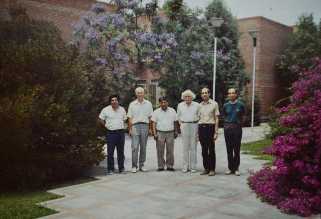 | Я (второй слева) в Мендосе на фоне Института. Рядом со мной два сотрудника - этнические индейцы потомки до-европейского населения; в середине с седой шевелюрой - великолепный француз Хуго Фурнье: крупный ученый, путешественник, коммунист; рядом с ним мой друг Энрике Борзотта со своим братом-близнецом (снимок 1992 г.). |
| 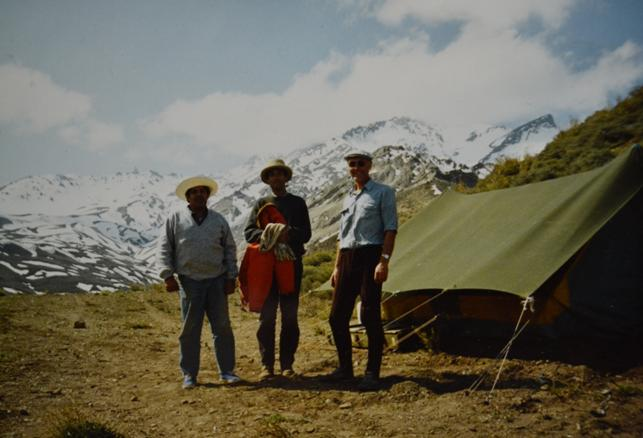 В Андах в разгар местного лета. Слева Мамани - этнический индеец, в центре Энрике, справа я. Аппаратура установлена и работает. Коллеги готовы спускаться вниз, а я остаюсь - не для охраны, а понаслаждаться тишиной и пейзажем и уклониться от ночного обжорства. | |
| 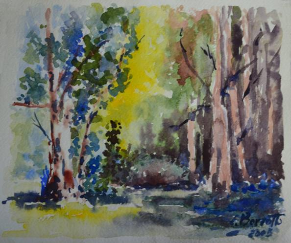 | Парк в Мендосе. Акварель Энрике Борзотта. |
Аргентинский институт в Мендосе мог заплатить мне только за 1 месяц работы (1000 $). Я поработал с Борзоттой еще 10 дней без оплаты и потом поехал посмотреть Чили на 2 недели. Моя переписка с Энрике продолжается доныне. В 2017 его отправили на пенсию. Он очень не хотел этого. В Институте была тихая комната и любимая работа. Дома квартира - на шумной улице, родственников не осталось. Женат не был, детей не было. Возможно, переписка со мной, чуть ли не единственный канал связи с внешним миром. Стараюсь подбодрить его. В прошлом году помог ему опубликовать его возможно последнюю научную статью, безуспешно блуждавшую 2 или 3 года по редколлегиям нескольких журналов.
В Буэнос-Айресе и Мендосе я познакомился с русскими эмигрантами первой волны, то есть они или их родители эмигрировали от большевиков. Все они были убежденными монархистами и патриотами России и встречались в церкви. Постсоветская волна эмиграции ещё не достигла тех мест и меня принимали с большим интересом. Я поначалу удивлялся, как можно в наше время быть монархистом. Мне дали читать монархическую литературу, особенно убедительны труды Солоневича и я постепенно пришел к убеждению, и наша сегодняшняя жизнь убеждает в этом все более и более, что просвещенная легитимная монархия явилась бы оптимальным устройством общества. В Чили я ехал к русским эмигрантам. Остановился в русском монастыре в предгорьях Анд в 30 км от столицы Сант-Яго-де-Чили. По 3 дня уделил поездкам на север в порт Винья-дель-Мар (рядом пустыня и медные рудники) и на юг в район грандиозного землетрясения 1960 г, в результате которого часть города провалилась, и образовалось большое озеро. Познакомился и потом многие годы переписывался с бывшим кадетом..., с Бородаевской Ириной 1912 г. рождения, супругами Плищенко знатного происхождения и с моими ровесниками супругами Беликовыми из Буэнос-Айреса. Последние после развала СССР каждое наше лето на 4-5 месяцев приезжают в Россию и колесят ее от Питера до Дальнего Востока. Останавливаются у единомышленников. Привозят материалы историко-патриотического содержания и антиглобалистскую интерпретацию сегодняшних событий, которые подготавливают в Аргентине. Два раза приезжали и в Киев, останавливались у меня. Я иногда сопровождал их в весьма интересные сообщества, например, к внуку Колчака. Знакомлюсь, с интересом обсуждаю проблемы, но после отъезда Беликовых контакты прерывались из-за постоянного цейтнота, в котором я нахожусь.
Вернулся из Аргентины. Контракт в ИГФ мне не стали продлевать, и я оказался на пенсии. Я не расстраивался, поскольку к EM геофизике поостыл, меня интересовали аномальные явления в природе. В 1989 г. мы купили сельский домик в Сумской области на живописном берегу Сейма с 40 сотками земли. Делли уже была на пенсии и мы, особенно она, с увлечением занимались сельским хозяйством. Овощи и фрукты были свои в изобилии, раздавали родственникам и знакомым, разводили кур и даже вырастили двух поросят. В общем "выживали" крестьянским трудом. Но научную работу и трудовой стаж я не прерывал, причем, интересно, работа сама находила меня. Два или три года работал в научно-производственной фирме "Атон" в Сумах. Фирмой руководил предприимчивый армянин, с которым мы познакомились на какой-то конференции. В Сумах у одной женщины после клинической смерти открылась необыкновенная способность рисовать эзотерические картины, не отрывая карандаша от бумаги - её рукой управляли "высшие силы". Начальник фирмы за небольшую зарплату приобретал у неё авторские права на картины с целью их тиражировать и продавать. Моя задача была дать им научную интерпретацию а, главное, быть "свадебным генералом" во время нескольких презентаций, большей частью в Москве. На презентациях были великолепные угощения и интересное общество (например, Джуна) со знакомствами, полезными для моих научных интересов. Зарплата у меня была мизерная, но и обязанностей почти никаких: раз в месяц приезжал на 1 день в Сумы за зарплатой и новыми картинами и рассказывал о проделанной работе. Небольшая коллекция копий картин сохранилась у меня. Ниже приведены "Влюбленные цветы" и "Земной разум, устремленный в глубины макро- и микрокосмоса" Бизнес у армянина не пошел и я не преуспел в "научной интерпретации" картин и мы мирно расстались.
| 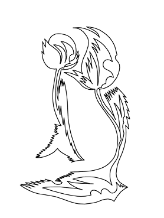 | "Влюбленные цветы" |
| 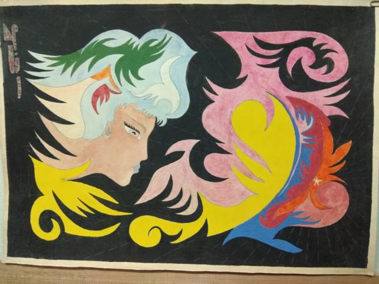 | "Земной разум, устремленный в глубины макро- и микро-космоса" |
В это же время я изучал теорию Козырева и ряд других фронтьерских проблем типа торсионных полей, общался с Акимовым, Шиповым, Шахпароновым, Дульневым и др., пытался проводить эксперименты по квазиспонтанным вариациям физических параметров. В последнем мне оказал большую бескорыстную помощь Гречин Пётр Юрьевич, великолепный экспериментатор, сделавший мне несколько типов крутильных маятников. Я их устанавливал в квартире на 4 этаже и в сельском доме. Я и Делли наблюдали вариации синхронно, но корреляций не было. Маятники писали местные помехи. Их следовало помещать в подвалы или штольни и организовать автоматическую регистрацию. Такой возможности не было, и я обосновывал теорию квазиспонтанных вариаций по чужим опубликованным данным.
Следующей работой (1994-1998) оказалось ВЧ-4000 Минобороны Украины, в котором был создан Отдел главных научных сотрудников с задачей выработать новую оборонную стратегию незалежной Украины. В Отделе было около 10 г.н.с. самых разных специальностей, я единственный геофизик. Конкретных задач никто не ставил, мы должны были генерировать идеи. Я ни с кем не общался кроме командира части, полковника, очень грамотного докт.техн.н. Рабочего места у меня не было, приходил только за зарплатой, иногда заходил к полковнику показать или передать мои наработки по теории Козырева, по локальности гроз, по управлению погодой, о дистанционной биолокации, о тектоническом факторе Чернобыльской катастрофы, о сейсмической опасности, об экологии. Никто этого не требовал, но я не привык получать зарплату и ничего не делать. Полковник с интересом меня выслушивал , складывал в отдельную папку и каждый раз говорил: падение экономики достигло нижней точки, скоро начнётся подъём и ваши наработки и предложения пустим в работу. Подъём не наступал. На третий год ВЧ преобразовали в Национальный научно-исследовательский центр оборонных технологий и нашлись генералы, пожелавшие возглавить его. Полковник как раз достиг 60 лет и его отправили на пенсию. Он вернул мне папку, сказав, что генералам она не нужна. Так я проработал более 3 лет и не оставил в организации никакого следа. В последний год меня ввели в состав докторского спецсовета (в ВЧ было много докторов и кандидатов радиотехнического профиля), но я не хотел иметь дело с секретными работами (и опять быть "невыездным") и отказался. Это ускорило мое увольнение.
В 90ые годы я сильно качнулся в сторону изотерики, но понял всю зыбкость её построений и решил, что моя ниша должна состоять в том, чтобы выбирать такие элементы сегодняшней изотерики, которые завтра (благодаря и моим усилиям) станут научным знанием. Я легко мог публиковать мои наработки в газетах и популярных журналах, но я поставил целью публиковать их в научных журналах. Это трудно. Кое-что удалось опубликовать, кое-что лежит, забывается и устаревает.
Уйдя из ВЧ, я за свой счет поехал в 1998 в Вену на Ассамблею Европейского геофизического союза. После Ассамблеи я съездил в Грац повидаться с гениальным, но непризнанным физиком Стефаном Мариновым, с которым я встречался два раза на Санкт-Петербургских конференциях на тему "Пространство, время, тяготение". Маринов жил очень скромно, один, подрабатывал, ухаживая за лошадьми, и в основе его питания была сырая морковь и капуста, выделяемая для лошадей. На физике не зарабатывал, наоборот, тратил последнее на издание своих многотомных работ. Через пару месяцев он посетил конференцию по физике в Италии, где его работы были встречены очень недоброжелательно. По возвращению он умер при невыясненных обстоятельствах. Ему было около 50 лет.
В Вене я узнал обстановку, правила игры в Европейском геофизическом союзе и на следующую Ассамблею в Ницце предложил Сессию по квазиспонтанным вариациям, провел её в качестве конвинера и основные представленные работы, в том числе две мои, были опубликованы в престижном журнале Physics and Chemistry of the Earth.
В Ниццу я ездил вместе с директором ИГФ Виталием Ивановичем Старостенко. История наших взаимоотношений довольно сложная. В 1970ые годы мне приходилось заниматься комплексной геофизической интерпретацией EM данных. Используя данные других методов, я стремился понять сущность и возможности каждого метода и консультировался по этим вопросам с соответствующими специалистами. По гравике и теории некорректных задач я несколько раз консультировался с Виталием Ивановичем, его консультации были четкими и по существу. Позднее, когда Виталий Иванович был зам. директора, он обращал внимание на мою недисциплинированность, например, сделал замечание, что я во время полевых работ после объезда пунктов наблюдения на 4-5 дней поехал на море отдохнуть. Я считал, что зимой работаю по 10-12 часов, зачастую и в выходные, в поле тоже часто работал в выходные и могу позволить при удобном случае дать себе отдых. Другое заметное нарушение произошло, когда я без командировки (по какой-то причине мне её не выписали) поехал на Всесоюзную конференцию в Суздаль, где сделал два хороших доклада. По возвращению получил очень строгое взыскание, инициированное Виталием Ивановичем, обиделся, чувствовал себя правым и после консультаций с адвокатом подал в суд на Институт. Адвокат меня предал: мне говорил, что я прав, а на суде поддержал Институт. Когда Виталия Ивановича выдвинули в академики, я написал отрицательный отзыв, но не послал, и его не избрали. При следующем выдвижении я послал-таки этот отзыв, - и его избрали. Да! Это обращение в суд и отзыв - это два моих поступка, о которых мне стыдно вспоминать - мною двигала обида. Был и третий поступок. Я к 1980-ым осознал, что в Институте слишком много внимания уделяется пустопорожнему (П) моделированию. Я имею в виду ситуацию, когда обратная задача в широких пределах неоднозначна и имеющимся данным удовлетворяет множество весьма различных моделей среды. П-моделирование исходит из некоторой гипотезы или из недоказанных геологических представлений о наличии шовных зон, или просто из некоторых предположений. Решается прямая задача и объявляется, что данные подтверждают эту гипотезу и реальной Земле приписываются свойства модели без анализа степени неоднозначности обратной задачи. Я написал в институтскую стенгазету большую статью об этом и о необходимости усиления экспериментальных работ и наблюдений. Статья долго висела на стенке без видимой реакции. Тогда я через голову дирекции опубликовал её в Вестнике АН УССР, ноябрь 1990, с выводом о необходимости смещения приоритетов тематики Института. Дирекция была возмущена. Таким образом, я сам подготовил почву для своего увольнения на пенсию. Но о третьем поступке не жалел и не жалею. Мои предложения в определенной степени осуществлены. Не благодаря моей статье, а жизнь заставила - ассигнования нацеливают на более конкретные исследования. В ВЧ я выполнил исследование по грозам и Виталий Иванович в 1997 г представил его в Доклады НАНУ. Я видел, что его возят на старомодном "газике", в командировки он ездит за счет принимающей стороны. Это заметно отличалось от поведения многих других начальников, особенно разительно от деяний начальника Днепропетровской геофизической экспедиции мерзавца Попова, приватизировавшего и разорившего богатейшую экспедицию, с которой я плодотворно сотрудничал. Приоритетом Виталия Ивановича является Институт и его сотрудники, - это вызывает уважение.
В Ницце в 1999 г мы гуляли по живописнейшим местам горно-морской Ривьеры и с одинаковым восторгом любовались красотами нашей любимой Земли. И мне хотелось закричать словами героев Киплинга "мы одной крови, ты и я", то есть мы одинаково любим нашу прекрасную Землю и науку о ней - геофизику, кроме того Виталий Иванович любит людей, в том числе геофизиков, а я не очень, и это мой недостаток, но в последнее время я понемногу изживаю его. Наши прошлые обиды и конфликты исчезли, и это замечательно. Самая большая победа - это победа над собой, над своими предрассудками, враждебностью. И мне кажется, что мы оба это ценим.
В Ницце я вступил в Американский геофизический союз (AGU) и стал получать газету EOS и журнал Physics today. Это существенно повысило мой кругозор по геофизике и физике. Там я прочитал и о проф. Варотсосе, познакомился с ним (см. выше 1964 г.) и почти 10 раз съездил к нему в Афины на срок порядка месяца каждый раз. Он оплачивал и проезд и пребывание. После Афинского землетрясения, которое он не предсказал, ему резко сократили финансирование. Тогда мы выиграли конкурс билатеральных проектов, и это продлило сотрудничество ещё на 3 года. Варотсос - фанатик. Работает не жалея ни себя, ни других. Он и его команда провели сотни линий земных токов в крутых скалистых горах, заросших колючим кустарником, чтобы надёжно выделять сейсмо-электрические сигналы (SES) на фоне вездесущих помех и МТ вариаций. Дело его жизни - это 15 обсерваторий на территории Греции, которые автоматически и непрерывно в течение 30 лет пишут электрическое поле. Варотсос ежедневно просматривает все записи и если появляются вариации, похожие на SES, начинается авральный анализ всех данных всеми известными и специально разработанными методами, чтобы обосновать, что это действительно SES, в каком месте, когда и какой силы ожидается землетрясение. Результаты он публикует в научном издании и рассылает избранному кругу специалистов. Публичные предсказания ему теперь запрещены. А 10-20 лет назад он много выступал с прогнозами по телевидению и радио, был очень популярен в народе и в правительстве, получил престижную премию Анассиса. Зато сейсмологи, особенно безуспешно работавшие по прогнозу, его ненавидели и критиковали более чем остро. Но Проф. Варотсос очень грамотный физик, основатель и многолетний директор Института физики твёрдой Земли в Афинском университете. Его активно поддерживает проф. Сейя Уеда, который зарегистрировал несколько SES в Японии.
SES обладает свойством избирательности, то есть он может не наблюдаться на станциях близких к землетрясению, но наблюдаться на более удалённой "чувствительной" станции. Это противоречило теории в горизонтально слоистой земле и могло быть объяснено сильной канализацией распространения сигнала. Критики требовали проведения МТЗ в районе самой "чувствительной" станции Иоаннина. Работы начались за 8 лет до моего появления там. Два аспиранта успешно защитили диссертации на материале 40 МТЗ. Они применяли последние западные методики (Бара, Грума-Бейли, круги Мора и др.), двумерную инверсию, но их модели не соответствовали ни данным, ни истинному строению, искомого проводника они не нашли. Я сразу попросил третьего аспиранта провести дополнительную обработку для получения векторов индукции и засел за кропотливый пункт за пунктом анализ всех данных. Вырисовывалась сложная картина, в которой накладывались региональные эффекты от окружающих морей и локальные. Отмоделировали береговой эффект, провели дополнительные полевые наблюдения в выбранных пунктах, и сложное казавшееся противоречивым поведение кривых МТЗ разрешилось трёхмерной моделью с системой неглубоких проводников в районе станции SES. Я опубликовал три возможные объяснения избирательности SES: проводящий канал, гидравлический канал, заканчивающийся электрокинетическими потенциалами в районе чувствительной станции и горизонтальное внедрение магмы. Последнее основано на работах сотрудников ИГФ Гутермана и Хазана. В связи с кризисом ассигнования и штаты у Варотсоса сокращаются, но он пока героически держит свою сеть станций в порядке, при необходимости выезжает сам для устранения неполадок в аппаратуре и её профилактики. Меня он тоже впрягал в работу так, что я кроме Афин и районов полевых работ в окрестностях Коринфа и Иоаннины нигде в Греции и не был. Правда были две конференции: на островах Крит и Санторини. На последней, я представил доклад о сравнительной характеристике катастрофических последствий от падения на Землю крупных космических тел и от сильнейших извержений вулканов. Я во всем этом не специалист, но чтобы попасть на Санторини, где 3,5 тыс. лет назад произошел взрыв вулкана, уничтоживший цивилизацию, заявил доклад, с увлечением изучил этот вопрос и сделал на чапменовской конференции AGU по вулканам доклад, встреченный с большим интересом, поскольку глобальные последствия обоих явлений весьма схожи.
В 2000 году несколько раз был за границей. В начале июля меня пригласили в Вену на конференцию по сейсмической опасности в Европе. Состав участников: правительственные чиновники, представители фирм, ученые. Заседали и жили в пригородном королевском дворце. Я оказался единственным представителем от Украины. Перед отъездом проконсультировался со специалистами и представил доклад о сейсмических зонах Украины, о риске на атомных станциях, о возможном сейсмическом вкладе в возникновение Чернобыльской катастрофы. Мне кажется, я вполне достойно представил Украину, только Украина об этом ничего не знала. Переезд до Вены чуть не окончился трагически. У меня была Шенгенская виза и билет в прямом вагоне до Вены. Поезд следовал через Словакию, которая за месяц до того ввела для Украины визовый режим. Я об этом узнал только в поезде. На границе меня задержали, пытался упрашивать толстомордых словацких пограничников, показывал визу и приглашение, они самодовольно улыбались и отправили обратно в Чоп поздно вечером. С Венгрией был ещё безвизовый режим, и можно было ехать утром на пригородном поезде до Будапешта и дальше на Вену. Ночь пересидел на вокзальной скамейке, рано утром прошел паспортный и таможенный контроль и всех пассажиров пригородного поезда собрали в бетонный отстойник с низким потолком и держали больше часа. Душно, жарко. Под конец мне стало дурно, я бессильно сполз по бетонному столбу на пол и уже видел, как лечу по темному туннелю к отдалённому свету. Тут кто-то сунул мне в рот таблетку валидола, и открыли широкие ворота, выпуская толпу на посадку. Свежий воздух и таблетка за полминуты привели меня в чувство, и я устремился занимать место.
В конце августа посетил EM Школу в Пинар-дель-Рио в Бразилии. Пребывание оплатил Оргкомитет, дорога - за свой счет. Выбрал маршрут Киев - Москва - Сан Пауло - Рио-де-Жанейро, дальше 140 км на автомашине. После школы зарезервировал 16 часов для осмотра Рио. Приехал за час до темноты, оставил вещи в гостинице и поехал на Капакабану посмотреть её вечером. Меня предупреждали о высокой преступности. Паспорт и билет спрятал в номере, с собой взял 100 $ и столько же в местной валюте для бразильских камней и других сувениров. Капакабана ярко освещена, с одной стороны высокие роскошные дома, с другой песчаный пляж шириной 200 - 300 м и темный рокочущий волнами океан. Направляюсь к берегу. Там уже полутьма и совсем мало народу. Вижу группу из четырёх парней, один направляется ко мне и спрашивает сколько время. Выставляю руку к свету. Он схватывает её и ударом карате по ноге выбивает кость из коленного сустава. Падаю на песок. Мгновенно подбегают ещё трое. Двое обшаривают и рвут доступные карманы и убегают с носовым платком, салфетками и часами. Один достал нож, направляет его на меня и приговаривает Only money, only money, я показываю на убегающих и говорю All my money ran away. Все убегают, ибо невдалеке были люди, видевшие все. А я рассмеялся и сказал "Вот тебе старый дурак и Рио-де-Жанейро". Встать не могу. Массирую и вправляю колено. Когда вправил, встал, но идти очень больно. Обнаруживаю, что все деньги целы. Из имевшихся 7 карманов до двух они не добрались. Я пожалел себя и их: лучше бы забрали деньги, а не ломали ногу. Полицейские усиленно предлагали поехать в отделение и составить акт. Я по глупости отказался (позднее я узнал, что мог бы получить от бразильского правительства солидную компенсацию). Обратный перелёт был с тремя пересадками и в каждом аэропорту (кроме Киева) меня встречали с инвалидной коляской, на которой можно было проехать в любое место, включая туалет. В Киеве ногу поместили в гипс на месяц. А у меня через 3 недели запланирована поездка в Японию, полностью ими оплаченная, билет и виза уже в кармане. На 20ый день прошу под мою ответственность снять гипс, заменяю его эластичными бинтами и с клюкой в руке вылетаю. Конференция и мой доклад прошли нормально, но к концу каждого дня нога сильно отекала, и ходить мог только во вьетнамках. В Киеве продолжил лечение. Подвижность коленного сустава порядка 50 градусов. Ногу не согнуть, ни разогнуть, присесть не могу. Врачи предсказывают, что в таком возрасте я её уже не разработаю. А один посоветовал плавание, и с тех пор я регулярно плаваю. Лет за пять полностью восстановил подвижность сустава, дефекты сосудов и костной ткани частично остались, а в целом плавание было очень полезно для здоровья. Так что "нет худа без добра".
В 2004 и 2005 годах выиграл конкурсы билатеральных проектов с Турцией и Китаем по МТ исследованию сейсмогенных зон. Работы были интересными и взаимно-полезными. Стороны хотели продолжать сотрудничество, но политика Министерства образования не предусматривает повторений и вообще мне сказали: Вы провели 3 проекта, дайте место другим. Я не расстраиваюсь - уж очень у них дотошная отчетность. Потом были академические билатеральные проекты с Венгрией и Румынией, но эффективного сотрудничества не получилось.
В 2008 был столетний юбилей проф. Н.А.Козырева. Была конференция (не присутствовал) и издан большой сборник статей (одна моя). Я для ГЖ долго и трудно писал большую статью (ГЖ, 2008, N6), в которой постарался объективно описать экспериментальные основания несимметричной механики, попытался объяснить имеющиеся количественные несоответствия и предложил путь их устранения. Подготовил английскую версию статьи, её согласны напечатать в полу-десидентском журнале Progress in physics (США). Хотелось бы напечатать в более солидном журнале. И это получилось в журнале Венгерской Академии Acta Geodetica Geophysica Hung.
В 2009 был оппонентом диссертации Т.А.Климкович, одним из результатов которой была изменчивость векторов индукции. Векторы индукции - мой "конёк" и исследование их изменчивости - моё последнее научное увлечение. Возможные причины изменчивости: изменение электропроводности, литосферная эмиссия, помехи, изменчивость источника. Я вижу пути, как разобраться в причинах изменчивости в каждом конкретном случае, но для этого нужны наблюдения, желательно синхронные, в ряде пунктов. В ИГФ есть аппаратура и силы для решения подобных принципиальных проблем, но они рассосредоточены в малых группах, занимающихся локальными проблемами и не желающих сотрудничать. По-видимому, придется использовать данные из США и других стран и применять нашу методику для исследования заграничных структур и геодинамики. По этому направлению можно подготовить 1-3 кандидатские диссертации в ближайшие 5-6 лет.
Итак, я дошел до сегодняшнего дня. (Все это я писал в 2011). Да, написал много, но еще больше осталось за кадром. Написал с пользой для себя. Увидел, что было много интересных (уже полузабытых) событий, были и неудачи, но я их переносил легко, не зацикливался на них, с интересом делал любое дело, за которое брался и старался доводить его до конца. Ни о чём не жалею, никому не завидую. Хотя стоп! Жалею, что нет у меня учеников. И количество диссертаций, защищённых под моим руководством, всего 3, а могло бы быть 7.
В.Н.Шуман, поступив в аспирантуру, сразу стал работать самостоятельно, в своем стиле. Я как руководитель только давал задание, он приносил готовый ответ. Я не могу похвастаться, что воспитал его. Наверное, его преподаватель в Университете Анатолий Аркадьевич Гроза сделал больше в его воспитании как ученого. Ну а главное - самовоспитание, честная работа над собой и хорошие способности.
Тема второго ученика С.Н.Кулика - физическое моделирование. Эксперимент задумывал я, измеряли на баке во Львове вместе, интерпретировал я. В итоге я сделал ему диссертацию, которую он не спеша защитил и ушел к другому руководителю, чтобы сделать у него докторскую. Он считает меня своим учителем. Действительно, он признаёт и использует мою теорию и методику, но применяет их в противоречии с моей методологией. Моя методология проста и не отличается от общепринятой в физике: честно давать результат распределения электропроводности в Земле с оценкой неопределённости (погрешности) и только после этого переходить к комплексной геолого-геофизической интерпретации и делать геологические выводы. СК и его ученики не анализируют должным образом имеющиеся опытные данные, а конструируют модель электропроводности под некоторую геологическую идею (адвекционную или основанную на недоказанных геологических представлениях, например, о наличии некоторых шовных зон), рассчитывают EM поля и функции отклика, но не проводят количественного сравнения с данными наблюдений, не определяют невязку и вообще данные наблюдений предпочитают не показывать. Построенную модель называют моделью некоторой шовной зоны, и создается впечатление, что геоэлектрическое строение этой шовной зоны получено из имеющихся EM данных наблюдений. На самом же деле этим данным соответствует и множество других моделей. Таким образом, полученная модель не является новым знанием о реальной Земле (знание - это ...), новым научным результатом, а П-моделированием. Такая работа не обременительна: придумал модель, поручил её рассчитать по купленной или подаренной программе, компьютер настроил множество красивых 3D-разрезов, геологи-соавторы в восторге: монографии и статьи текут десятками, про львиную долю содержания которых можно сказать "всё что ново, то неверно (не доказано), всё что верно, то не ново". А Володя Шуман вторгается в самые сложные, запутанные области геоэлектрики, кропотливо ищет, находит и убедительно обосновывает нетрадиционные научные подходы, а вот времени на написание монографии не хватает, потому что работает добросовестно. Я с СНК в нормальных личных отношениях и писать всё это мне очень неприятно. Но! Когда я вижу мусор на улице или в парке, безобразие на улице и в государстве, я возмущаюсь. Были редкие попытки вмешаться, но они были мало эффективны и стоили нервов. И я для себя решил: это не моё, эти безобразия видят все, большинство от них страдает, пускай борются более молодые и у кого есть время на это. Но когда я вижу, как в родном Институте по моей специальности мои ученики творят подобные "труды", впустую расходуя государственные средства и уводя науку в сторону от её истинных задач, я не могу сказать "это не моё" (и мне стыдно сознавать, что это труды моих учеников). Хотя я мало верю в успех этого выступления, но как сказал Некрасов "пусть каждый в бой идёт, а бой решит судьба", а если буду молчать в таком принципиальном вопросе, то не смогу уважать себя, а это плохо.
Мой третий диссертант - Саша Ингеров. Он воспитанник Днепропетровского горного института, его первый руководитель Тяпкин. Я и Саша образовали очень эффективный тандем науки и практики. Он руководил МТЗ в Днепропетровской геофизической экспедиции. Я участвовал в обсуждении проектов, он проводил полевые работы и обработку результатов наблюдения, решение обратной задачи и интерпретацию выполняли совместно. За 10 лет сотрудничества получен огромный материал на несколько диссертаций. Мы написали более 10 статей и монографию. К сожалению, первичный материал был записан на магнитной ленте с ограниченным сроком годности и теперь полностью утрачен. В первой половине 90-ых экспедиция была приватизирована и перестала существовать, Ингеров стал безработным. Перебивался случайными заработками и был вынужден уехать в Канаду, где со временем занял достойное место вице-президента компании Phoenix-Geophysics - мирового лидера по производству EM аппаратуры. На этом посту он активно помогает ученым и производственникам стран СНГ в развитии геоэлектрики на современном уровне. Ингеровым и Шуманом я могу гордиться, хотя и сознаю, что мой вклад в их становление и успех невелик. Они сами создали себя. Так же и я. После университета у меня фактически не было руководителей и учителей, я, к сожалению, все делал и решал в одиночку. Плодотворное взаимно обогащающее сотрудничество на равных было только с Андреем Жиглинским при подготовке к экзаменам в университете. Ну и в самом университете я получил хорошее образование благодаря прекрасным лекторам и учителям.
В моем кабинете лежит большое количество научных материалов, для опубликования которых требуется доработка. Многое устаревает, но не все. Например, "Геологическая интерпретация Донбасской аномалии электропроводности". Материал оригинальный, очень интересный с практически важными результатами. Лежит более 20 лет и не устаревает. Доработка требует высокой квалификации. У меня руки до этого не доходят и не дойдут.
Идей много, но работаю медленно, да и поддержание здоровья требует времени и усилий.
Итак, я дошел до сегодняшнего дня. Да, написал много, но еще больше осталось за кадром. Написал с пользой для себя. Увидел, что было много интересных (уже полузабытых) событий, были и неудачи, но я их переносил легко, не зацикливался на них, с интересом делал любое дело, за которое брался и старался доводить его до конца. Ни о чём не жалею, никому не завидую.
Все (Кое-что добавлено, в основном фотографии) это я писал в 2011 и оно опубликовано в Рокитянский И.И. Воспоминания на тему научной автобиографии на пороге 80-летия // Геофиз. журн. - 2011. - 33, N5. - С. 140-156.
О нём я опубликовал некролог на английском языке в IAGANews, 2016, p. 15-16 и статью "В.Н.Шуман - ученый, гражданин, патриот" в Геофизическом журнале, 2017, N1, 144-146, сокращенный черновик которой приводится ниже (фрагменты, не вошедшие в публикацию, выделены красным цветом:
"Поэтом/ученым можешь ты не быть, а гражданином быть обязан"
"А что такое гражданин? Отечества достойный сын"
Родился Володя 18 февраля 1942 года в небольшом селе Задереевка, расположенном в Украинском Полесье близ границы с Белоруссией. Почвы в этих местах мало плодородны: пески перемежаются с болотами и кругом леса. Местные жители выращивали овощи, фрукты, содержали скот, ловили рыбу, собирали грибы, охотились - все в основном для собственных потребностей. Товарное производство и цивилизация медленно проникала в эти места. Деды и прадеды Володи были крестьянами среднего достатка, трудолюбивыми, набожными, как и большинство окружающего населения. Катаклизмы XX века конечно коснулись и этого уголка, но в несколько меньшей степени. Отец Володи, Николай Тимофеевич, 1916 года рождения имел склонность к науке, и, едва получив среднее образование, был направлен советскими властями в свою деревню учительствовать для "ликвидации неграмотности на селе". Уже после войны он получил высшее образование в Киевском университете и стал учителем географии. Мать Володи, Татьяна Николаевна 1919 года рождения была учительницей младших классов. Поженились родители перед войной, а Володя появился ровно через год, когда эти места уже были оккупированы немцами. Благодаря отсутствию промышленных предприятий и удаленности от транспортных магистралей в Задереевке не было ни жестоких боёв, ни бомбежек, ни расквартирования немецких солдат, только эпизодические поборы продуктов.
Детство Володи прошло в Задереевке с ее сказочной нетронутой природой. Он был подвижным и очень любознательным. Но время было трудное, он был старшим (сестра и брат родились в 1944 и 1945 годах соответственно) и он активно включался в полезные дела: собирал грибы, ловил рыбу, заготавливал дрова, сгребал сено, косил траву, отбивал косы. Особенно притягивала его огненная стихия кузни. С 5 лет заворожено смотрел на оплавленный металл, а позднее брал в руки молот и пытался ковать. В школьные годы у Володи появился интерес к природным явлениям: почему так красивы и бесконечно разнообразны восходы и закаты, почему меняется погода и как ее предсказать..., позднее появилась требовательность к ответам на подобные вопросы, - ответы должны быть правильными, то есть соответствовать законам физики и математики. Ответы на многие вопросы Володя находит в учебных программах и учебниках. Но возникают новые более углубленные вопросы (процесс познания бесконечен). Школу он оканчивает на отлично и поступает на геологический факультет Киевского государственного университета, живет в общежитии, летние практики, а каникулы проводит в Задереевке в деревенских трудах и забавах. В 1964 году получает диплом по специальности геофизика и в 1965-1967 годах в Белорусской геофизической экспедиции (в пос. Колодищи Минской области) отрабатывает государству долг за свое бесплатное (как положено при социализме) обучение. Там он заблаговременно сдал два экзамена из кандидатского минимума и в 1967 году поступил в аспирантуру в Институт геофизики Национальной академии наук Украины, и после её успешного окончания продолжал работать в Институте последовательно на должностях всех ступеней научного сотрудника, а последнее десятилетие на должности заведующего отделом математической геофизики.
Кандидатская диссертация (1972), выполненная под моим руководством, была посвящена решению прямых и обратных задач электромагнитных зондирований и их применению к изучению аномалий электрической проводимости в земной коре. В последующие годы Володя проводит исследования по выдвигаемым им новым перспективным теоретическим и методическим проблемам геоэлектрики. ...- в Публикации перечисляется 8 проблем...
В последние годы он сосредоточился на нетрадиционном описании и объяснении природных явлений и натурных экспериментов, не объяснимых в рамках традиционной физики, на объяснении того, что некоторые физики отказывались признавать как реально существующее. В последние годы Володя опубликовал ряд статей, в которых он обосновывает необходимость комплексного подхода к изучению динамики литосферы и всех видов ее эмиссионной активности, рассматривая литосферу как многоуровенную (в пространственном и временном масштабах) иерархически организованную многофазную нелинейную самоорганизующуюся открытую для внешних и внутренних энерго-информационных воздействий динамическую систему. Для описания такой сложной системы необходимо рассмотрение всех участвующих полей: механических, тепловых, термодинамических, электромагнитных...; применение фрактальных моделей, кластерного анализа, теории хаоса и бифуркаций; учет явления взрывной неустойчивости и других подходов. Володя знал эти новые подходы, получил ряд результатов уже в виде формул и собирался дальше разрабатывать теорию эмиссии литосферы - фундаментальную проблему геофизики, поскольку эмиссия литосферы (всех генерируемых в ней физических полей) является основным источником информации о глубоких недрах Земли. К сожалению, у Володи не осталось последователей, способных продолжать и развивать такую сложную тему.
В конце 1980-ых я слегка упрекал Володю, что он не пытается доводить свои новые теоретические и методические разработки до практического применения. Он парировал так: "Я вывел строгие формулы, показал, что используемые формулы не совершенны (например, импедансные граничные условия не имеют строгого математического обоснования и не точны) и опубликовал все это. Читайте. Если я не прав, критикуйте". - Никто Володины работы не критиковал, но и не поддерживал. Новый подход потребует существенной перестройки системы электроразведочных работ, что ударит по финансам компаний, ведущих эти работы, и по престижу авторов применяемых методик. Конечно, Володя прав: внедрение - это не его амплуа. Для внедрения нужен не глубокий ум ученого, а организационный талант менеджера. А в последние 30 лет непрерывного падения ассигнований и талант менеджера навряд ли помог бы.
Основные идеи и результаты Володя, к счастью, без задержки публиковал в Геофизическом журнале. Было у него много недоработанных идей и остались незавершенные наброски рукописей. Но довести их до должной кондиции некому. Но и некоторые из его опубликованных идей и результатов слишком новы, чтобы быть понятыми и принятыми к использованию в настоящее время. Будем надеяться, что они будут приняты в будущем и очень хотелось бы, чтобы они вошли в историю науки под авторством В.Н.Шумана, а не "переоткрыты" заново.
Володя был очень порядочный и скромный ученый. Имея глубокое понимание в любой проблеме он щедро дарил идеи коллегам, не требуя соавторства или, входя в соавторство, оказывался где то в конце списка, согласно алфавиту, хотя его вклад мог быть основополагающим.
Формальные данные о научной, научно-организационной и педагогической работе Володи, о его участии в работе Ученых советов и редколлегиях, о его наградах напечатаны в разделе Потери науки Геофиз. журн.2016, N6 и в IAGAnews2016, page 15-16 и здесь не повторяются. Владимир Николаевич в 2014 году за заслуги в области науки получил звание лауреата государственной премии.
Володины приоритеты:
Научная работа. Всегда выполнял ее с большим интересом и добротным результатом. Но ради науки он не приносил в жертву интересы семьи и коллег. Любовь и уважение к людям доминировали у Володи. Например, работая в своем кабинете над сложными проблемами, он никогда не отказывал ни коллегам, ни подчиненным в приеме и обсуждении их проблем и, как правило, приглашал на чашку кофе/чая.
Семья. Володя был глубоко предан своей семье. Свою "половинку" Любовь Демидовну он встретил в Белоруссии и не расставался до конца, прожив вместе 50 лет. Они воспитали двух сыновей Олега и Дмитрия, а позже воспитывали внуков.
Малая Родина. В отпуск Володя ездил в деревню, чтобы помогать там родителям, выполняя исконную крестьянскую работу и получая удовольствие от общения с родной природой. Он истинный патриот своей Малой Родины. Хотя мог бы отдыхать и на курортах, и на море и заграницей. И отдыхая на Малой Родине, он никогда не был потребителем, а был созидателем, не только на физическом плане, но и в духовном, неся в окружающий мир любовь и доброту.
Коллектив Института геофизики - это вторая Малая Родина Володи. Он всегда добросовестно выполнял общественную (волонтерскую по современной терминологии) работу, делая это с душей и с юмором. Все, кто общался с ним, любили его за доброту, за остроумие, за чувство юмора, за понятную трактовку сложных теоретических проблем.
Володя был Патриотом своей семьи, своей Малой Родины, Института и своей Великой Родины
Володя оставляет глубокий след в нашей жизни, оставляет пример, которому надо следовать, чтобы быть Ученым, Гражданином и Патриотом.
18 февраля 2017 исполняется 75 лет со дня рождения Володи, до которого он не дожил три с половиной месяца. Я не знаю, верил ли Володя в Бога, но божьи заповеди выполнял лучше большинства верующих. Он был талантливым ученым, неординарной личностью и при этом необычайно скромен - полное отсутствие гордыни. "Не судите, да не судимы будете" - это про него. Он никого не осуждал, не критиковал слабые научные работы и другие недостатки людей...Кто знает! Если загробная жизнь существует, то Володина душа несомненно вознеслась в благословенные райские высоты и Володя незримо продолжает помогать нам своей любовью.
Выше написанное понравилось многим читателям и к очередному юбилею - 85-летию редколлегия ГЖ ожидала очередного "юбилейного самообслуживания". Но о чем писать? Научных успехов - никаких. Аппаратуры для проведения полевых работ и получения новых материалов нет. Используем общедоступные материалы геомагнитных обсерваторий, имеющиеся в интернете. Придумываю новые подходы, которые ранее не использовались. Но доступ к литературе ограничен (библиотека иностранной литературы почти не получает, для оплаты в интернет денег нет) и часто делаешь то, что уже сделано другими. Тематика прогноза землетрясений не популярна и многие журналы не печатают работы по этой теме.
Кадры: Самый сильный аспирант Тимур параллельно с работой у нас в ИГФ зарабатывает в фирме. После Майдана в 2014 фирма перебазируется в Турцию и забирает с собой Тимура с женой и близнецами-младенцами. Остаются аспиранты Артем и Лера - тоже выпускники физмата в Политехе. Знают компьютерные программы и программирование, физику понимают слабо, а родным языком не могут связно, логично и без противоречий изложить научные факты - все статьи приходится писать мне. Да и проверять получаемую на компьютерах обработку приходится мне: чтобы увидеть ошибку или противоречие в результатах, надо понимать физику, понимать что мы ожидаем получить, да и считать необходимым все проверять. А мои аспиранты не утруждали себя. При рабочем дне 8 часов (после аспирантуры они научные сотрудники), больше 5 часов они не работали. Конечно академические зарплаты м.н.с. (60$ три года назад и 140$ сейчас) совершенно недостаточны, но до 2017 Артем и Лера, живя с родителями, удовлетворялись ими. Но в 2018 им потребовались деньги, и они ушли работать в фирмы программистами, не защитив диссертации, хотя материал получен и опубликован, осталось скомпоновать и защитить. - это о работе.
О мироощущении. Я счастливый человек. По меньшей мере до 80 лет я жил с надеждой в душе "Впереди у жизни только даль, полная надежд людских дорога". Даже более того в душе звучало "Самая лучшая песня не спета, Самая лучшая девушка где-то. Все еще впереди. Иди!"
Осенью 2016 умер от инфаркта мой лучший ученик Володя Шуман, а 5 июля 2017 умер от цирроза печени мой младший сын (поэт?) Яша, и я почувствовал, что пора подводить итоги, пора быть готовым к отходу в мир иной (или к небытию?). Мироощущение кардинально изменилось: впереди неизбежный конец жизни, который может произойти в любой момент и ряд телесных слабостей и неизлечимых болезней напоминают об этом. Но когда уж слишком напоминают, я пою "И только сме-е-ерть одна, Как берег моря суеты, для всех прибежище она..." и говорю "Вот и хорошо. Не буду вас лечить. Зачем тратить время и деньги на противные бесполезные операции, процедуры, лекарства - все болезни умрут вместе со мной". Видите, оптимизм неисчерпаем. А песня (и стих) не только "строить и жить помогает", но и умирать тоже.
Итак, я перешел в состояние умирания. И в это время я особенно остро чувствую, как прекрасен наш физический мир - наша Земля с восходами и закатами, с грозами и морозами, с морями и горами, степями и лесами... - я любуюсь всем, а особенно цветами и женщинами. Раньше женщины вызывали желание и я удовлетворял его с одной женщиной ,а на остальных обращал мало внимания. Сейчас возможность удовлетворения желаний исчезла, исчезло желание, и осталась только способность бескорыстно любоваться самым прекрасным созданием природы - женщиной. И я любуюсь и молодыми и старыми, белыми и черными, худенькими и толстенькими, всякими, правда пьяные, сквернословящие, нетрадиционной ориентации и даже курящие вызывают сожаление, и ими не любуюсь. Любуюсь и красивыми мужчинами. Когда же вижу истинно влюбленных парня и девушку, то меня охватывает восторг, я сопереживаю их счастье, я поглощаю энергию счастья, которое они излучают... Итак и в состоянии умирания можно радоваться. Но перейдем к делам.
Хочу успеть собрать, упорядочить и оставить в доступном виде информацию о моих родственниках и друзьях, о своих основных научных результатах. И делать это приходится в условиях снижающихся работоспособности и памяти одному без помощников (родственники заняты своим выживанием, оставшиеся ученики при мизерных академических зарплатах вынуждены зарабатывать в фирмах), одному даже в решении вопросов поддержания здоровья (чтобы не дать нашей медицине досрочно уморить себя).
Чувствую себя виноватым, что не сумел помочь Яше хорошо пройти свой жизненный путь и хочу как-то увековечить его, опубликовав его стихи и биографию. Но как это оптимально сделать: "о покойных только хорошее" или "все, что было, без прикрас"??? - и так на каждом шагу надо делать выбор - эта постоянная обязанность/неизбежность постоянно делать выбор больше всего травмирует меня. Хочется не делать выбор (перейти на философию "недеяния", опубликованную одним ленинградским целителем в 1990-ых). Иногда перехожу и этим оправдываю свою бездеятельность. Но действовать надо. Так что вперед!
Все еще умираю и постараюсь растянуть это удовольствие на максимально возможный срок
Воспоминания на тему научной автобиографии на пороге 80-летия (Геофизический журнал, 2011г., т.33, N5, с.140-157) - журнальный вариант воспоминаний
Страницы друзей "Темного леса"
Последнее изменение страницы 30 Jun 2021
{kind=link}
{kind=link}
{kind=link}
{kind=link}
{kind=link}
{kind=link}
{kind=link}
{kind=link}
{kind=link}